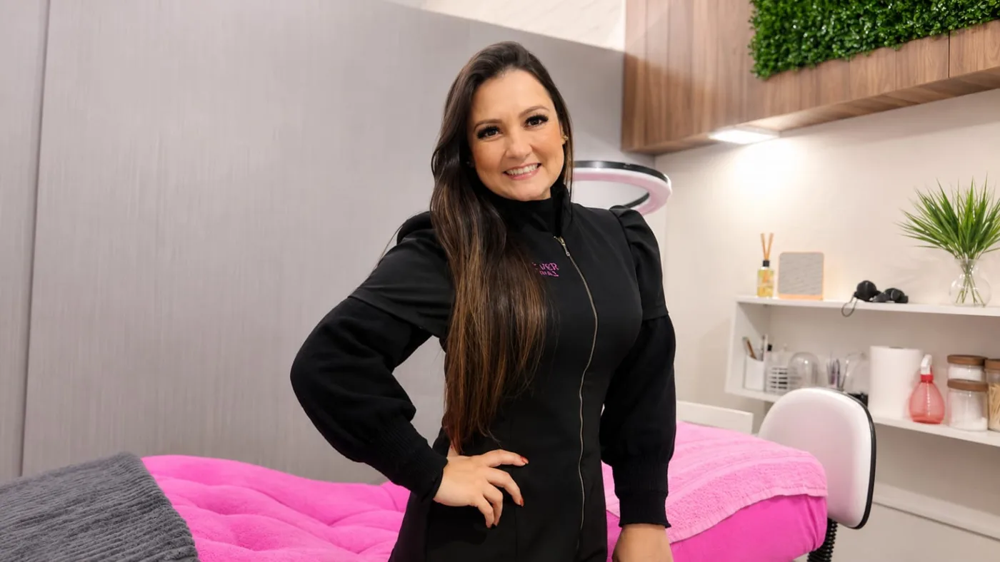
Seja bem-vinda
É uma alegria ter você aqui! Seja bem-vinda ao universo da beleza e ao início de uma nova jornada profissional.
Preparei este curso com muito carinho, dedicação e responsabilidade, para compartilhar com você não apenas técnicas, mas também conhecimentos importantes para construir uma carreira segura, consciente e de sucesso no mundo da extensão de cílios.
Ao longo dessa jornada, vamos aprender muito mais do que aplicar fios. Vamos falar sobre cuidados, segurança, higiene, preparação, técnicas e todos os detalhes que fazem a diferença na rotina de uma verdadeira profissional.
Acredito que a beleza está nos detalhes, no cuidado e, principalmente, na forma como fazemos cada pessoa se sentir. Por isso, quero que você aproveite cada aprendizado, perca o medo de tentar, descubra seu potencial e entenda que toda grande profissional um dia também foi iniciante.
Estarei aqui para compartilhar minha experiência, orientar seus primeiros passos e mostrar que, com dedicação, amor pelo que se faz e vontade de aprender, é possível transformar conhecimento em oportunidades.
Que estes dias sejam apenas o começo de uma linda trajetória, cheia de descobertas, conquistas e realizações!
Com carinho, Elis Miranda Glow.
Seu brilho. Minha missão.
Minha história como instrutora
Minha história com o ensino começou muito antes de eu me tornar professora.
Cresci acompanhando meus pais pelo Brasil, enquanto eles ensinavam corte e costura e ajudavam milhares de mulheres a conquistar uma profissão e transformar suas vidas. Desde pequena, aprendi a enxergar o poder que o conhecimento tem de abrir caminhos e criar novas oportunidades.
Aos 21 anos, depois de me casar, comecei a viajar pelo Brasil divulgando cursos profissionalizantes de lingerie. Fazia propagandas no rádio e na televisão e descobri uma das minhas grandes paixões: comunicar, palestrar e estar perto de mulheres que buscavam uma nova oportunidade.
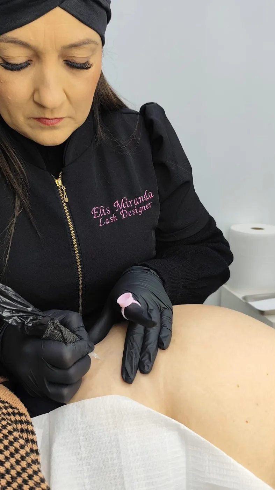
Com o tempo, também me tornei professora, compartilhando conhecimentos e experiências com minhas próprias alunas.
A vida me levou por novos caminhos, incluindo uma pausa nas viagens para me dedicar ao meu filho. Mais tarde, encontrei na área da beleza uma nova forma de trabalhar, crescer e transformar a autoestima das mulheres.
Hoje, ao ensinar outras profissionais, sinto que continuo uma missão que começou lá na minha infância: compartilhar conhecimento, abrir caminhos e ajudar mulheres a acreditarem no próprio potencial.
Porque ensinar, para mim, nunca foi apenas transmitir uma técnica. É também inspirar, acolher e mostrar que sempre podemos construir novas possibilidades para a nossa vida.
Introdução
Cada vez mais mulheres desejam cílios volumosos e alongados com praticidade, sem precisar usar rímel.
A extensão de cílios consiste na aplicação de um fio sintético sobre cada fio natural. O resultado são cílios volumosos e alongados que realçam o olhar, elevam a autoestima e, quando bem feitos, têm excelente durabilidade.
Desejo a você um excelente curso. Está preparada para mergulhar no mundo das extensões de cílios e elevar a autoestima de milhares de mulheres?
O que é uma Lash Designer?
É a profissional que se capacita em uma das técnicas de extensão de cílios e busca sempre aprimorar o conhecimento, acompanhando o que há de mais moderno e atualizado no mercado de cílios e visagismo. Deve ser detalhista e procurar ser um diferencial no mercado.
Não procure atalhos
Para ter sucesso na carreira de lash, não pule etapas. Esteja disposta a estudar, treinar e investir em você. Não se prenda a um único curso: busque sempre a evolução.
A origem das extensões de cílios
A história dos cílios fio a fio remonta ao século 20. Em 1927, o maquiador Max Factor inventou os cílios postiços, e a atriz Phyllis Haver foi a primeira a usá-los. Os primeiros postiços estavam longe do ideal, mas o público ficou cativado pelo olhar dramático da atriz, e logo todas as divas de Hollywood passaram a desejá-los. Max Factor, que havia sido assistente de maquiagem artística no Teatro Bolshoi de Moscou, tornou-se estilista e maquiador de sucesso nos Estados Unidos e criou a primeira marca de maquiagem do mundo, que leva seu nome.
No início do século 21, os japoneses criaram um cílio artificial que reproduzia com precisão a forma e a curvatura dos cílios naturais. Dali surgiu o fio a fio como conhecemos hoje. A primeira pessoa a realizar uma extensão fio a fio foi Shu Uemura, que presenteou a Madonna com um olhar inesquecível, usando essa nova tecnologia em 2003.
Postiço × fio a fio
| Cílios postiços | Extensão fio a fio | |
|---|---|---|
| Onde é colado | Na pálpebra | Em cada cílio natural |
| Cola | Cola de pele | Adesivo específico de cianoacrilato |
| Duração | Um dia | Cerca de um mês, com manutenções |
O procedimento virou uma verdadeira febre entre as japonesas, porque o formato único da pálpebra asiática tornava as extensões praticamente invisíveis, permitindo fios muito mais longos. Desde então, o alongamento de cílios conquistou o mundo, com diferentes curvaturas, tamanhos, espessuras e materiais.
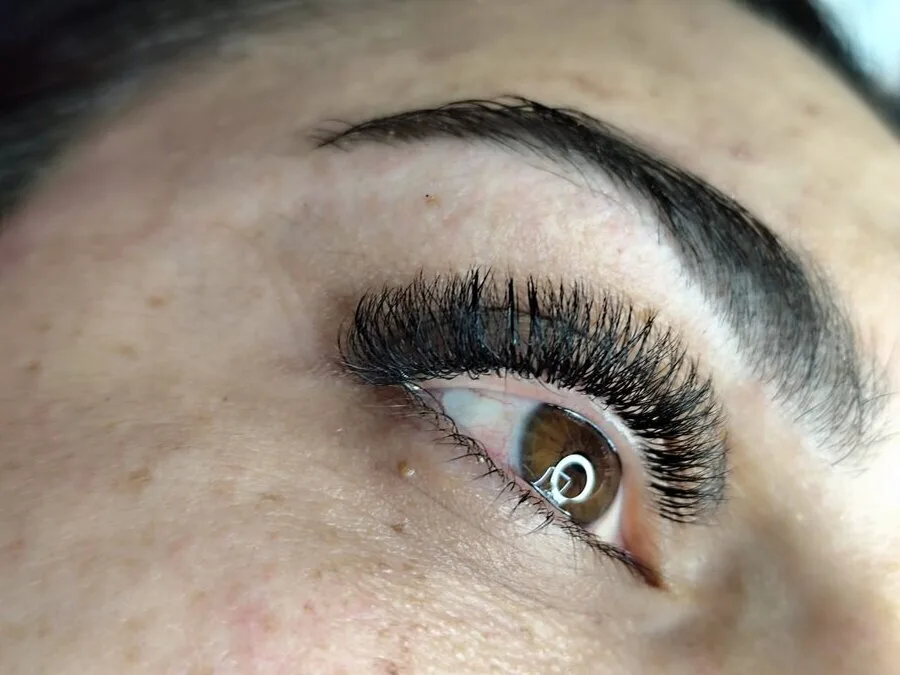
Anatomia do olho e importância dos cílios
Em formato esférico, os olhos são protegidos pela cavidade óssea do crânio. As pálpebras dificultam a entrada de sujeira e as sobrancelhas impedem que o suor chegue ao globo ocular.
Esclera: parte branca do olho, camada fibrosa que reveste o globo ocular. Nela ficam os músculos extraoculares responsáveis pelo movimento dos olhos.
Córnea: calota cristalina e transparente, contínua com a esclera. É delicada, muito sensível e cheia de terminações nervosas. Desvia a luz que chega ao olho em direção à retina. Juntas, córnea e esclera protegem as estruturas internas.
Pupila: fica no centro da íris e tem abertura regulável, que permite a entrada de mais ou menos luz.
Íris: parte colorida do olho. É um músculo circular que controla o tamanho da pupila: relaxa sob luz fraca (a pupila aumenta) e contrai sob luz forte (a pupila diminui), protegendo a retina.
Retina: fica na parte interna do olho e envia sinais pelo nervo óptico ao cérebro, formando as imagens que vemos.
Conjuntiva: lubrifica e protege contra agentes externos que possam prejudicar a visão.
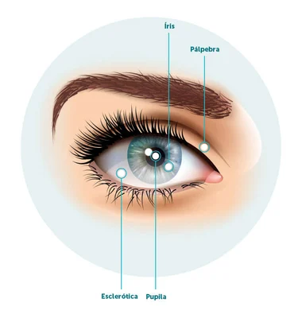
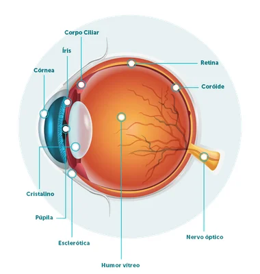
Tricologia dos cílios
Os cílios existem para proteger os olhos: são uma barreira contra poeira e microrganismos e funcionam como sensores de alto reflexo, que fazem a pálpebra fechar antes que algo atinja o olho. São semelhantes aos cabelos, com cerca de 0,25 micrômetro de diâmetro, e por isso merecem cuidado.
O fio do cílio é composto por três partes:
Medula: camada central, que dá sustentação ao fio. Formada por células provenientes do córtex.
Cutícula: camada externa, formada por células em escamas sobrepostas e queratinizadas, ricas em enxofre. É a barreira protetora do córtex e da medula, responsável pelo brilho e pela maciez.
Córtex: segunda camada e principal do fio, considerado o “coração” do cílio: concentra a maior quantidade de proteína, além de hidrogênio e oxigênio responsáveis pela hidratação interna. É formado por células cilíndricas (a matriz), onde ficam a queratina e outras proteínas.
Composição química
O cílio é formado por carbono, hidrogênio, nitrogênio, oxigênio e enxofre, que se unem em uma proteína chamada queratina: 65% a 95% de proteínas, mais cerca de 12% de água e 3% de lipídios.
| Elemento | Proporção |
|---|---|
| Carbono | 45% |
| Oxigênio | 28% |
| Nitrogênio | 15% |
| Hidrogênio | 7% |
| Enxofre | 5% |
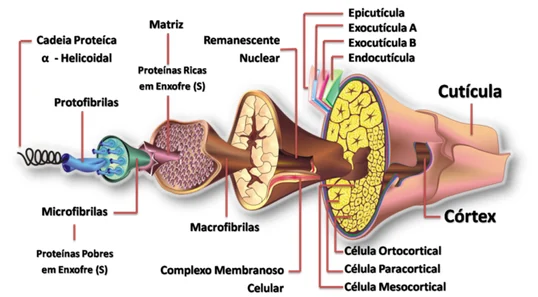
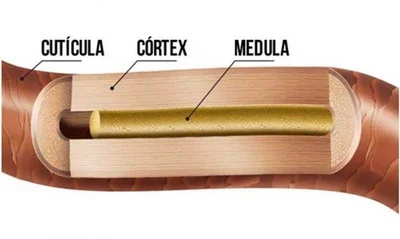
As 3 ligações químicas do fio
Pontes de hidrogênio (temporárias): são as mais fracas e as mais numerosas. Toda vez que molhamos o cílio, elas se desfazem e podemos dar uma nova forma ao fio ao secá-lo.
Pontes salinas (intermediárias): têm cargas positivas e negativas nas cadeias polipeptídicas. São um pouco mais fortes que as de hidrogênio e se alteram quando mudamos o pH. Só voltam à estrutura normal quando o pH retorna ao natural do fio.
Pontes dissulfeto (permanentes): ligações de enxofre, as mais fortes do fio, responsáveis pela estrutura permanente (liso, crespo ou encaracolado). Só são rompidas por processos químicos.
A cor natural vem da melanina: a eumelanina dá a coloração escura e a feomelanina, a avermelhada. A presença, ausência ou mistura desses pigmentos explica a variedade de cores existentes (em pessoas albinas, o fio é amarelado por não haver melanina).
A pele tem papel fundamental na produção dos cílios, por isso é essencial compreender a saúde da pele e a estrutura dos pelos para obter bons resultados.
Glândulas de Meibômio
São glândulas sebáceas das pálpebras, localizadas nas margens, e produzem o meibo, substância gordurosa que forma uma das camadas do filme lacrimal. Ele mantém o olho lubrificado, impede que a lágrima evapore rápido e protege e nutre a superfície ocular.
Ciclo de crescimento dos fios
Os cílios duram em média 90 a 150 dias até cair e serem substituídos. Na pálpebra superior temos cerca de 160 fios por olho, distribuídos em 2 a 5 camadas (nos cantos interno e externo há menos camadas, em média 2 a 3). Todo dia surge cerca de um fio novo para substituir os que caíram, seguindo um ciclo de três fases:
| Fase | O que acontece | Duração |
|---|---|---|
| Anágena | Fase de crescimento | 30 a 45 dias |
| Catágena | Os cílios param de crescer por contenção do folículo | 2 a 3 semanas |
| Telógena | Repouso antes da queda | Até cerca de 7 semanas |
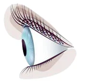
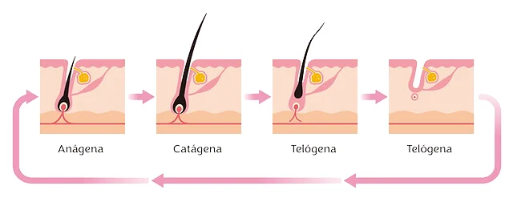
Devemos preservar os cílios em fase anágena (baby lashes), pois muitas vezes não suportam o peso dos fios sintéticos. Na manutenção, eles já estarão na fase ideal para receber a extensão.
Saúde ocular
Os cílios vão além da estética: protegem o globo ocular como barreira física contra microrganismos e partículas e funcionam como sensores que disparam o fechamento da pálpebra quando algo se aproxima. Conhecer as principais alterações oculares ajuda você a identificar quando não atender e quando encaminhar para um médico.
Conjuntivite
Inflamação da membrana transparente (conjuntiva) que recobre a parte branca do olho e a face interna das pálpebras. Normalmente atinge os dois olhos e pode durar até 15 dias. As causas incluem alergias, infecções (virais, bacterianas ou fúngicas), corpo estranho e contato com substâncias químicas.
Alérgica: a mais comum, afeta em geral os dois olhos e é mais frequente em pessoas com rinite ou bronquite. Pólen, poeira e pelos de animais podem provocar. Não é contagiosa e é tratada com colírio antialérgico.
Infecciosa: causada por vírus, bactérias ou fungos e altamente contagiosa. O contágio ocorre pelo contato com secreções. Previna lavando as mãos e evitando compartilhar toalhas e roupas de cama. A bacteriana produz secreção amarelada e espessa; o tratamento (colírios ou pomadas com antibiótico) deve ser feito exclusivamente por oftalmologista.
Tóxica: causada pelo contato direto com agente tóxico (produtos de limpeza, tinta de cabelo, fumaça de cigarro, cloro, maquiagens, colírios). Causa lacrimejamento e vermelhidão, que costumam desaparecer em 2 a 4 dias. Na nossa profissão, ocorre quando o fume liberado pela polimerização do adesivo (cianoacrilato) atinge o olho.
Blefarite
Inflamação das bordas das pálpebras, com escamas, crostas, vermelhidão e inchaço. Pode ser causada por infecção bacteriana ou fúngica, disfunção das glândulas meibomianas, olho seco ou parasitas (ácaros Demodex). Pálpebras superior e inferior podem ser afetadas, e pessoas com pele oleosa, caspa e olho seco têm maior chance de desenvolver.
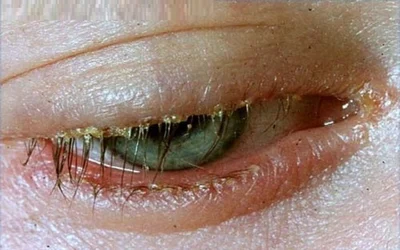
Abrasão corneana
Arranhão na superfície frontal transparente do olho (córnea). Causa dor, vermelhidão, fotofobia e sensação de corpo estranho. Em geral vem de poeira, lentes de contato ou objetos estranhos. Nas extensões, acontece quando o pad é posicionado incorretamente e se movimenta. Pequenas abrasões podem ser tratadas com colírios lubrificantes sem conservantes, mas somente um profissional habilitado pode indicar o tratamento.
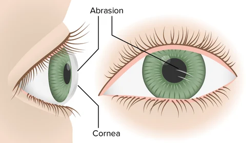
Terçol × calázio
| Terçol | Calázio | |
|---|---|---|
| Natureza | Infecção bacteriana | Inflamação (sem infecção) |
| Causa | Bactérias | Obstrução do canal de saída de uma glândula sebácea |
| Aspecto | “Bolinha” vermelha na borda externa da pálpebra, perto dos cílios | Caroço avermelhado na pálpebra, logo após os cílios |
| Sintomas | Olhos inchados, dor, vermelhidão, calor, coceira, lacrimejamento, sensibilidade à luz | Inchaço (edema) avermelhado, mais comum em quem tem acne, seborreia ou rosácea |
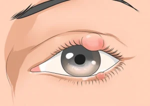
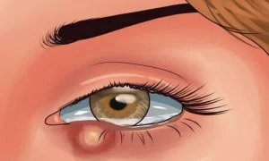
Embora os sintomas sejam parecidos, exigem cuidados distintos. Somente um oftalmologista pode fazer o diagnóstico correto.
Demodex
Ácaros são os menores animais do grupo dos aracnídeos e só são vistos ao microscópio. Duas espécies habitam as pálpebras: o Demodex folliculorum (base dos cílios, o que acomete cílios humanos) e o Demodex brevis (glândulas meibomianas). Alimentam-se de células da pele, hormônios e sebo, e estão ligados à blefarite e à meibomite. Os problemas surgem quando há falta de higienização.
Sintomas: coceira intensa nas pálpebras, crostas na base dos cílios, olhos grudados e com secreção (principalmente pela manhã), inchaço e vermelhidão, sensibilidade à luz, ardência, perda de cílios, olho seco e sensação de areia nos olhos.
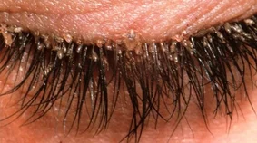
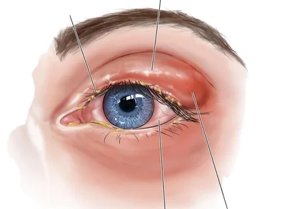
Biossegurança
Na estética, biossegurança é a consciência de prevenir doenças no ambiente de trabalho. Profissional e cliente ficam expostos a patógenos (hepatite B e C, herpes, gripe, tuberculose, micoses, conjuntivite, HIV, entre outros) e a produtos que exalam odores tóxicos, como o adesivo. O Brasil é o terceiro maior mercado de beleza do mundo, o que torna o cuidado ainda mais necessário.
EPIs usados nas extensões de cílios
São materiais de uso individual, geralmente descartáveis, que não devem ser reutilizados, nem para a mesma cliente.
- Luvas: em todos os procedimentos, descartadas ao final de cada um.
- Touca: evita contaminação cruzada, por microrganismos que possam estar no cabelo, entre profissional e cliente.
- Jaleco ou uniforme: sempre apresentável, evita que você se suje.
- Máscara: protege boca e nariz da profissional; descartável.
- Sapatos fechados: evitam o risco de queda de materiais e perfuração.
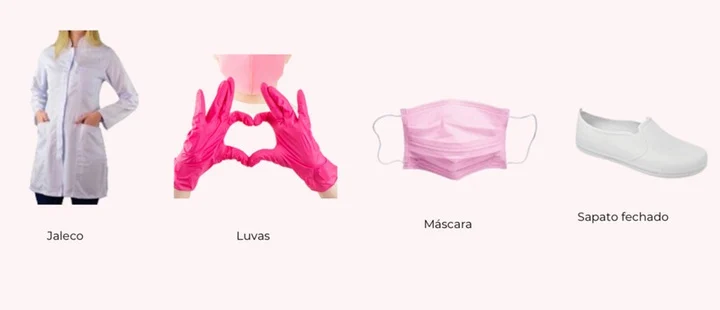
Limpeza, higienização e esterilização
A limpeza e desinfecção do ambiente e dos materiais devem ser diárias. Todo estabelecimento deve respeitar a legislação sanitária vigente do seu município.
Limpeza: remoção de sujidades orgânicas e inorgânicas (óleo, gordura, sangue ou pus) com água, detergentes e ação mecânica, deixando o produto seguro para manuseio e preparado para desinfecção ou esterilização.
Higienização / sanitização: conjunto de operações físicas ou químicas que reduzem a contaminação por microrganismos e proteínas tóxicas em superfícies inanimadas (instalações, equipamentos e utensílios).
Desinfecção: eliminação de formas vegetativas em superfícies inanimadas, por agentes químicos e/ou físicos.
Esterilização: processo que promove a completa eliminação ou destruição de todas as formas de microrganismos (vírus, bactérias, fungos, protozoários, esporos). É o único meio que garante trabalhar com segurança e prevenir contaminações.
O fluxo unidirecional de processamento em 7 etapas
- Limpeza
- Inspeção visual
- Embalagem
- Esterilização
- Monitorização da esterilização
- Registros da monitorização
- Armazenamento
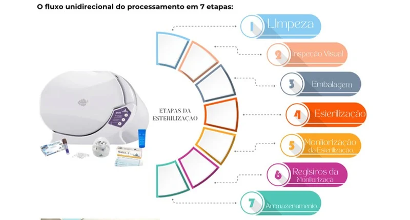
Noções básicas e contraindicações
Técnica clássica fio a fio
Consiste na aplicação de um fio sintético para cada fio natural da cliente, com um adesivo específico. Dentro desta categoria podemos trabalhar com fio a fio, volume brasileiro (Y) e volume egípcio (W). O procedimento alonga, levanta, disfarça ou realça, além de dar volume. São aplicados em média 160 fios em cada olho.
O tamanho, a curvatura e a espessura devem ser escolhidos conforme as características do fio natural de cada cliente, sem sobrecarregá-lo. Avalie também o formato dos olhos, das sobrancelhas e do rosto: o visagismo é essencial.
Neste curso também abordamos a técnica de capping, que entrega retenção e volume superiores a 30 dias, e a técnica com fans premade, que oferece volume de 3D até 16D sem que você precise montar os fans.
Contraindicações
- Cirurgias oculares: solicitar liberação médica se feitas há menos de 3 meses.
- Gestantes e lactantes: solicitar liberação médica por escrito.
- Alergia ao cianoacrilato.
- Doenças oculares ou processos inflamatórios.
- Cirurgia recente nos olhos.
Tipos de fios sintéticos
O diferencial dos fios está na composição e no processo de fabricação. O material é o PBT (polibutileno tereftalato), um termoplástico sintético semicristalino do grupo dos poliésteres, com boa resistência química, térmica e estabilidade dimensional. A maior parte das fábricas fica na Ásia e a qualidade varia conforme o controle de produção.
Seda, mink sintético, vison, cashmere e mink real
Silk (seda): produzido para imitar a seda, é brilhante e maleável, mas não retém a curvatura por muitos dias. Geralmente é PBT puro. Em dias quentes tende a relaxar e ficar mais reto, e o brilho preto pode ficar parecido com plástico.
Mink sintético (synthetic mink): o mais usado. Muito leve e macio, confortável, com preto intenso e efeito matte. Feito de uma mistura de poli/fibra, também conhecido comercialmente como vison ou cashmere.
Fio elipse × fio cônico
Fio elipse (flat): base achatada, abraça maior ângulo do cílio natural, com bifurcação sutil nas pontas e melhor aderência por ter maior área de acoplagem.
Fio cônico (classic): base circular, mais difícil de acoplar. É o fio exigido em campeonatos de técnica clássica.
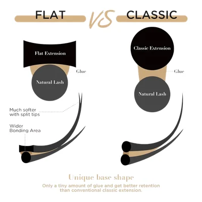
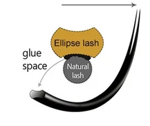
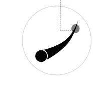
Fios tecnológicos
Os fios tecnológicos permitem a iniciantes aplicar extensões com muito mais volume e rapidez. Antes, isso só era possível, com segurança, pelo volume russo ou mega volume. São fabricados com Nano PBT, muito mais leve. Nesta categoria estão o fio Y, o fio W e a mais nova evolução, os fans premade.
Fio W e suas variações (volume egípcio)
Destacam-se pela variedade de fios presos em uma única base, com opções de 3D até 10D. A aplicação segue o mesmo procedimento dos fios individuais, com resultado duradouro.
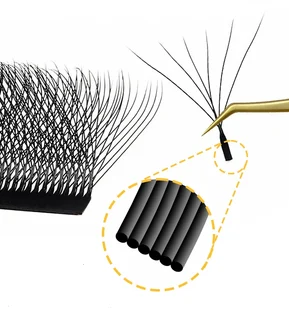
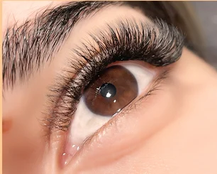
Fio Y e suas variações (volume brasileiro)
Possui duas variedades no mercado, que se diferenciam pela quantidade de fios presos em uma única base e de bifurcações nas pontas (4 a 6). Dá mais volume que o fio a fio e é aplicado da mesma forma.
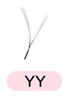
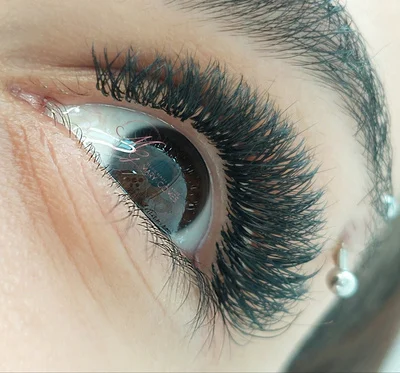
Fans premade
A mais nova evolução das extensões: fans montados manualmente, perfeitos, comercializados desde 3D até 24D, de material coreano, com leveza e delicadeza. Como já vêm prontos, você aplica da mesma forma que os fios tecnológicos e entrega do volume russo ao mega volume. Encontrados nas espessuras 0,03 / 0,05 / 0,07.
Há curvaturas tradicionais (C, D), curvaturas criativas (L, L+, M) e versões já prontas para criar o efeito wisp, em caixas mix e individuais, pretos e coloridos.
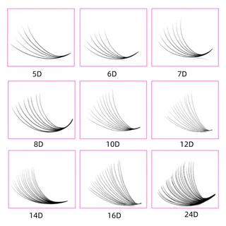
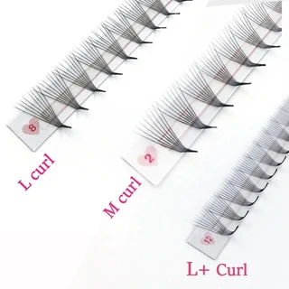
Para aplicar, você encontra os fans soltos ou fixados em uma fita. Para removê-los da fita sem desmontá-los, use uma pinça de boa precisão e pegue pela base.
Curvaturas
As curvaturas existem em grande variedade e devem ser escolhidas conforme o trabalho proposto, com atenção ao biótipo facial de cada cliente. Além das tradicionais, há as criativas, a tendência mais recente (as mais usadas hoje são L e M), para efeitos como fox e seta. Aparecem no fio a fio, nos tecnológicos e nos premades.
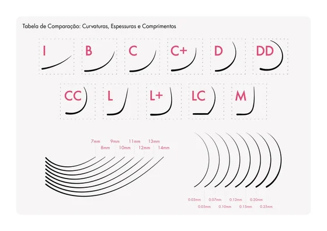
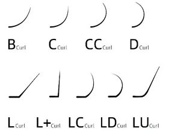
Efeito de cada curvatura
| Curvatura | Indicação e efeito |
|---|---|
| B | Cílios voltados para cima, para um efeito perceptível mas natural. Mais reta na base e curva suave perto da ponta. Indicada também para olhos profundos. |
| C | A mais popular: ideal para a maioria das clientes, sem exagero. Abre e levanta o olhar com qualquer estilo de mapping. Alonga o olhar. |
| CC | Abre, arredonda e levanta o olhar. |
| D / DD | As mais dramáticas, para um look ousado. Melhor em cílios retos ou voltados para baixo. Projetam o olhar para trás, levantam e abrem. |
| L | Base plana com curva acentuada, ponta voltada para frente. Ótima para cílios retos ou voltados para baixo; levanta e cria efeito gatinho com elevação no canto externo. |
| L+ | Ideal para mapping que promove alongamento e deixa o olhar mais sensual. Evitar no mapping boneca. |
| LC | Projeta o olhar para frente e promove alongamento. |
| M | Boa para quase todas as clientes, em especial cílios retos ou caídos; projeta o olho para frente e para cima, com visual de olho de gato. |
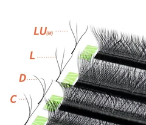
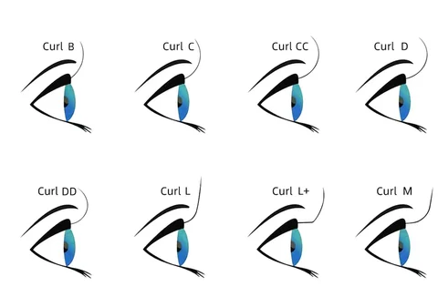
Comprimento e diâmetro
Diâmetro
É a espessura de cada fio. Os fios sintéticos têm variações e devem ser escolhidos conforme a técnica e a estrutura do fio natural. O diâmetro da extensão deve ser o mais próximo possível do diâmetro do cílio natural.
| Técnica | Diâmetros usuais |
|---|---|
| Fio a fio | 0,10 · 0,12 · 0,15 · 0,18 · 0,20 · 0,25 |
| Fio tecnológico | 0,05 · 0,07 · 0,10 |
| Volume russo | 0,05 · 0,07 (fans de 2 a 7 fios para cada fio natural) |
| Mega volume | 0,03 · 0,05 |
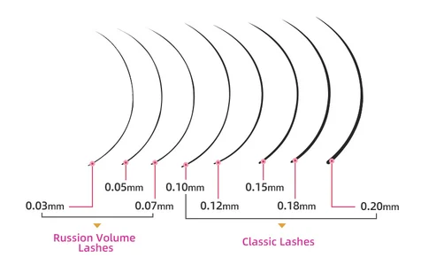
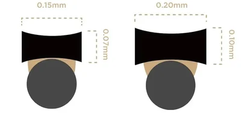
Comprimento
Tamanho de cada fio sintético. No Brasil é mais comum usar de 7 a 14 mm, mas avalie sempre o fio natural, evitando sobrecarregá-lo, tanto no diâmetro quanto no comprimento.
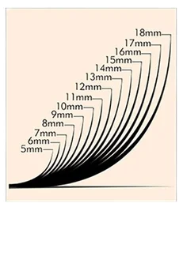
Mapping
O mapeamento é altamente personalizado: não existe uma abordagem que sirva para todo mundo. Ele define o olhar desejado e a construção de um olhar único, combinando tamanhos e curvaturas conforme o formato dos olhos e as preferências da cliente. Sem ele, o trabalho não resulta em harmonia visual.
Para precisão, prefira mapear com a cliente de olhos abertos: peça que fixe o olhar em linha reta, marque a parte superior da pálpebra e transfira para o pad. Outra técnica é dividir os olhos em quadrantes iguais e traçar o mapeamento. Mantenha conversa constante com a cliente sobre expectativas e avalie com segurança se é possível atendê-las.
Pontos de referência
- Canto interno: primeiro fio
- Canto externo natural: último fio
- Início e final da íris
- Pupila
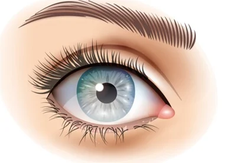
O que cada região proporciona
| Ponto | Região | Efeito e indicação |
|---|---|---|
| A | Canto interno (A → D1) | Perfeito para olhos afastados: aproxima o olhar pelo direcionamento dos fios. |
| B | Canto externo (B → D2) | Alonga, estreita e afasta o olhar. Efeito gatinho, fox, delineado, sereia. |
| C | Meio (início ao final da íris, D1 → D2) | Abre o olhar. Camufla olhos profundos, pálpebras caídas e olhos pequenos. Usado no mapping boneca. |
| D2 | Final da íris (C → D2) | Mapping coringa: levanta o olhar e camufla o caimento das pálpebras. Usado no mapping esquilo. |
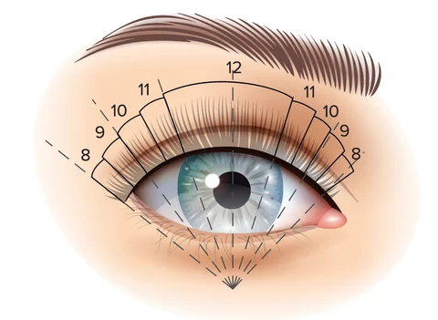
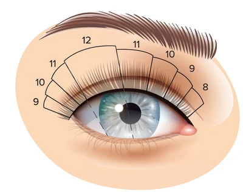
Análises principais
Antes de mapear, identifique: formato dos olhos; posicionamento (distância entre os olhos); profundidade (proeminentes ou profundos); linha horizontal (ascendentes ou descendentes); e altura dos olhos e sobrancelhas.
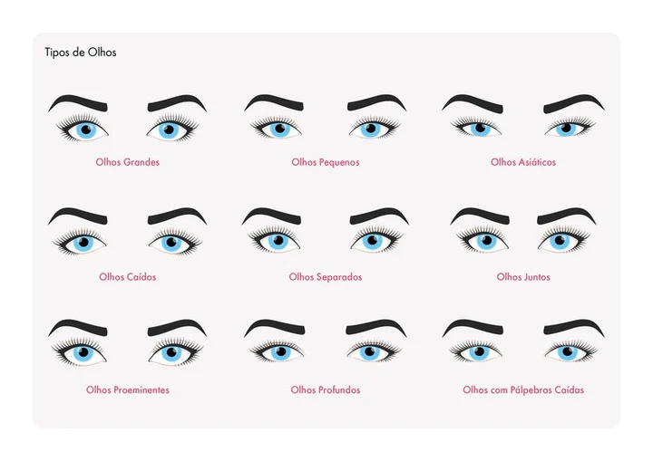
Tipos de mapping
| Mapping | Efeito | Indicado para |
|---|---|---|
| Boneca | Abre o olhar | Olhos separados, pequenos ou caídos |
| Esquilo | Levanta e alonga o olhar | Olhos juntos ou com caimento de pálpebras |
| Coringa | Fica bom em qualquer tipo de olho | Quando houver dúvida |
| Gatinho | Estreita e alonga (direcione em ângulo de 130° a 180°, a partir do meio do olho) | Olhos que pedem alongamento |
Descrição de materiais
Antes da lista completa (no fim da apostila), conheça a função de cada material.
Pinças
As retas são usadas no isolamento dos fios; as curvas, na retirada e acoplagem. Evite que caiam no chão: perdem a precisão e entortam as pontas, que são super finas.
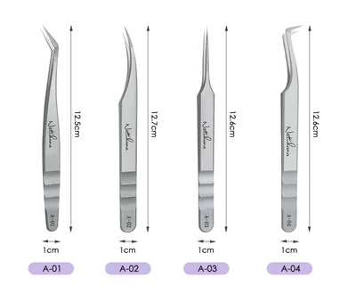
Higrômetro
Uso essencial: é o único acessório que mostra a umidade e a temperatura do ambiente de trabalho, para o adesivo funcionar corretamente e as aplicações durarem. Deixe-o sempre próximo de onde atende.
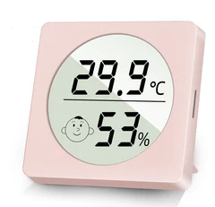
Primer / Cleanser
Higieniza os cílios e melhora a fixação: remove a oleosidade natural, resíduos de maquiagem e sujidades que o shampoo não retirou, além de elevar o pH do fio natural, favorecendo uma acoplagem mais rápida e eficaz.
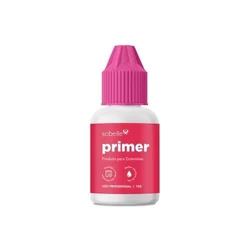
Pad e micropore
O pad tem formato anatômico e é livre de fiapos, o mais confortável para a cliente. Protege a pálpebra inferior, ajuda a isolar os cílios inferiores e dá melhor visão do campo de trabalho, além de proteger a região das pontas das pinças. O micropore auxilia no isolamento dos fios inferiores, no levantamento das pálpebras e no afastamento do canto interno dos olhos.
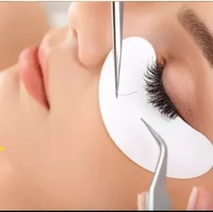
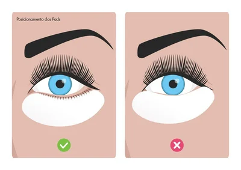
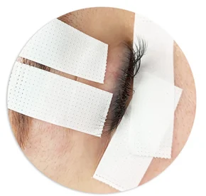
Nano mister
Acelera a cura do adesivo, dispersando nanopartículas de água em movimentos circulares, a distância do rosto. Hoje já existem produtos que o substituem, como os finalizadores, que curam o adesivo rapidamente.
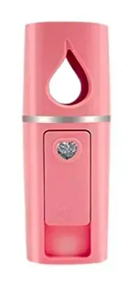
Suporte para fixação dos fios
Há grande variedade: de apoio na bancada ou fixados na mão. Não existe regra; escolha o que mais se adaptar. Se optar pelo de apoio, prefira os mais pesados, que dão estabilidade.
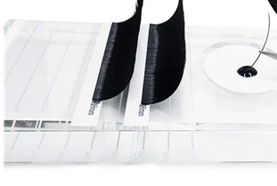
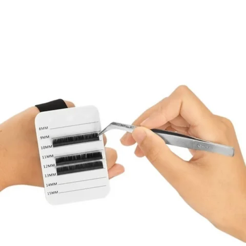
Suporte para adesivo
Use o que mais se adaptar e que conserve o adesivo. Quanto menos o adesivo ficar exposto, melhor a fixação: prefira recipientes com orifício.
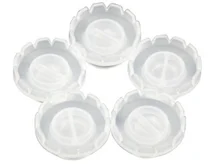
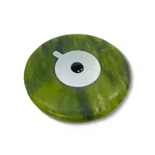
Microbrush, aplicador, escovinha e caneta
- Microbrush descartável: para aplicar removedores, primer e finalizadores.
- Aplicador descartável: bastonete de fibra sintética para higienizar os cílios antes da aplicação; também serve para aplicar removedor.
- Escovinha descartável: penteia as extensões durante o procedimento e facilita o alinhamento. Uso individual; após a aplicação, ofereça à cliente para manter os cuidados.
- Caneta: de ponta fina, de preferência preta (para o mapping no pad) e branca (para marcar a pele).
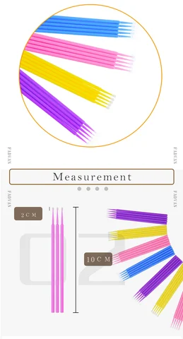
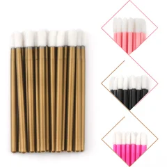
Espuma para limpeza e pump
É o primeiro passo antes de iniciar o alongamento: higienize a região dos olhos. Comece removendo resíduos de maquiagem com água micelar e coloque uma quantidade adequada no pump para criar espuma. Existem shampoos específicos para cílios; um shampoo com pH entre 7,3 e 7,5 remove impurezas com mais eficácia, mantendo os fios mais alcalinos.
Removedor
Remove as extensões. Há em gel e em pasta. Os de textura densa tendem a ser mais confortáveis por não escorrerem.
Finalizadores
Ao aplicar o finalizador, ele encapsula imediatamente os fumos e acelera a cura do ponto de ligação do adesivo, evitando que os olhos fiquem expostos ao processo de cura e reduzindo o risco de irritação e alergia. Também dá flexibilidade às ligações e aumenta a retenção.
- Sem choque de cura
- Aumenta a retenção
- Funciona com todas as colas
- Reduz irritação e desenvolvimento de processos alérgicos
pH do fio natural
pH é a sigla de “potencial hidrogeniônico”: indica a quantidade de H⁺ presente em toda matéria (cabelo, pele, saliva, água...). É medido em uma escala de 0 a 14.
| Faixa | Tipo de produto | Efeito na cutícula |
|---|---|---|
| 0 a 6,9 | Ácido | Cutícula fechada |
| 7,0 | Neutro | Cutícula normal: não proporciona boa retenção, pois não está porosa |
| 7,1 a 14 | Alcalino | Cutícula aberta |
O ideal é deixar o fio levemente poroso: a margem é de 7,3 a 7,5, para não danificar o fio e ter excelente retenção. Nossos olhos têm pH próximo de 7,0, por isso o produto final precisa ser equilibrado para não causar irritação.
Como interpretar
- pH ácido (1 a 6,9): o natural e recomendado para o fio fica entre 4,2 e 5,8. Um pH levemente ácido indica fio saudável.
- pH alcalino (7 a 14): precisamos do fio levemente alcalino para boa retenção, mas é ideal manter abaixo de 8 para preservar o fio.
- pH neutro (7): é o do olho; não há grande prejuízo ao fio, mas também não há porosidade para boa retenção.
É primordial que a lash conheça esta tabela: assim saberá o pH do cílio e da região dos olhos e escolherá com segurança cada produto. Se quiser higienizar e já preparar o fio, opte por shampoo com pH de 7,1 a 7,5.
Naturalmente, o cílio saudável é ácido, mas alguns shampoos e componentes do dia a dia são alcalinos e podem afetar essa condição. Quanto mais alcalino, mais aberta a cutícula, e as substâncias penetram melhor. Um fio brilhante e forte provavelmente está no pH adequado. Já um fio com pH alcalino alto é frágil, com cutícula sempre aberta, textura áspera e desgasta mais fácil.
Desequilíbrio de pH
| Possíveis causas | Detalhe |
|---|---|
| Características naturais de cada pessoa | Diferenças individuais na composição e no pH dos cílios |
| Problemas de saúde ou uso de medicação | Condições ou tratamentos que afetam o pH |
| Estilo de vida | Alimentação, hábitos de higiene e outros hábitos |
| Produtos incorretos de preparo | Produtos que alteram o pH ou não são compatíveis com o fio |
| Problema causado | Consequência |
|---|---|
| A cola leva mais tempo para secar, mesmo com o ambiente adequado | Atraso na aplicação |
| A cola escorrega e não adere | Menor aderência das extensões |
| Desempenho inconsistente | Queda prematura |
| Clientes diferentes com resultados diferentes no mesmo procedimento | Variação na durabilidade |
| Em casos extremos, a cola não adere | Desprendimento precoce |
Retenção
Retenção é manter e prolongar a durabilidade das extensões, que tipicamente duram até cerca de 21 dias antes de começarem a cair, pela troca de fase dos cílios naturais ou pelos cuidados da cliente. É possível ter durabilidade superior quando você domina a técnica de aplicação, usa corretamente cada produto conforme a necessidade da cliente e se baseia no pH do fio natural.
Como os cílios filtram impurezas, uma boa durabilidade exige higienização adequada. Para o adesivo aderir, é importante abrir suavemente a cutícula do fio, deixando-o mais poroso. Quando o pH está desequilibrado, a aderência cai e não há retenção.
Os 3 princípios da retenção
- Entender o pH do fio natural.
- Escolher assertivamente os produtos adequados.
- Higienizar e preparar corretamente os fios naturais.
Passo a passo para o sucesso na retenção
- Pré-limpeza: use água micelar em um pump e faça a espuma; enxágue muito bem para remover resíduos de maquiagem. Apenas isso não prepara o fio: é preciso produtos de pH que alcalinizem os fios naturais.
- Shampoo específico para extensões: com microbrush ou lipgloss, faça movimentos de fricção sobre os fios naturais e na linha ciliar, onde há maior concentração de sujeira pelas glândulas sebáceas. Faça duas vezes. Use água filtrada ou mineral em todo o processo.
- Cleanser: produto específico para remover a oleosidade. Aplique em todos os cílios, com palito e lipgloss (ou dois lipgloss), sempre com fricção.
Repita a limpeza de 2 a 3 vezes durante a aplicação, nos cílios que ainda vão receber a extensão: o rosto continua produzindo oleosidade. Esse preparo abre levemente a cutícula e, junto com o adesivo adequado e a acoplagem correta, entrega excelente retenção.
Adesivos
É um dos assuntos em que a iniciante mais tem dificuldade, porque a durabilidade depende de vários fatores. Use o higrômetro para controlar a temperatura e a umidade conforme a indicação de cada adesivo. Há inúmeras marcas, e é preciso compreender como funcionam e do que são feitos para escolher bem.
Os adesivos têm moléculas de cianoacrilato, que iniciam a polimerização ao contato com as moléculas de água do ar. Esse processo une as partículas da cola e a faz aderir aos cílios.
Breve história
- 1895: o polímero é descoberto por Awers Thorpe.
- 1942: desenvolvido para miras de armas, mas aderia a tudo.
- 1950: nova fórmula usada em cabines de aeronaves e na sutura de ferimentos (o metil cianoacrilato causava necrose).
É uma resina acrílica que polimeriza rapidamente na presença de água, formando cadeias longas e fortes. O cianoacrilato tem duas fases: monômero (líquido) e polímero (sólido). A passagem de uma para outra é a polimerização.
Estágios da polimerização
- Adesão: tempo de ação especificado em cada adesivo, que une a extensão ao cílio natural.
- Coesão: tempo após a acoplagem. Nesse momento, segure e direcione o fio para que fique alinhado e bem acoplado.
- Polimerização (cura): processo de cura do adesivo, em média 24 h.
Composição
Varia conforme o fabricante. O cianoacrilato (80 a 90%) deve ter sempre a maior concentração.
| Tipo de cianoacrilato | Características |
|---|---|
| Metil | Altamente tóxico, uso proibido |
| Etil | Secagem rápida, menos tóxico, resistente, cadeia longa |
| Butil | Secagem intermediária |
| Alkoxy | Cadeia longa, secagem e cura lentas, baixo odor e baixa emissão de gases, sensível à umidade, baixa toxicidade |
| Metoxi / Etoxi butil | Grau médico: reduzem o risco de irritações e alergias |
Outros componentes: estabilizantes (mantêm a molécula afastada e evitam que o adesivo endureça, mas são sensíveis à umidade); espessantes (anidrido ftálico, plastificante); PMMA (polimetil metacrilato, termoplástico que dá elasticidade e resistência); carbon black (cor do adesivo e dispersão); hidroquinona (retarda a secagem e estabiliza).
| Exemplo | Componentes |
|---|---|
| 1 | Ethyl cianoacrilato, ethoxyethyl cianoacrilato, PMMA, carbon black |
| 2 | Etil cianoacrilato, alkoxy-2-cianoacrilato, PMMA |
| 3 | Ethyl-2-cyanoacrylate, alkoxy-2-cyanoacrylate, n-butyl-2-cyanoacrylate, PMMA, carbon black |
| 4 | Ethyl-2-cyanoacrylate, polimetil metacrilato, butyl-2-cyanoacrylate, alkoxy-2-cyanoacrylate, carbon black |
Toxicidade do adesivo
Está associada à estrutura molecular: quanto mais curta, maior o potencial de toxicidade. Todos os adesivos liberam vapores (a forma vaporizada dos monômeros de cianoacrilato) durante a polimerização. Em contato com olhos, nariz, garganta ou qualquer área úmida do corpo, esses fumos podem provocar reações como irritação, inchaço da pálpebra, ressecamento dos olhos e da garganta, mutação fetal, alteração nas células cancerígenas e, em casos raros, asma, devido à polimerização em contato com a umidade das membranas, o que faz o adesivo ficar inerte.
| Medidas de segurança |
|---|
| Use EPIs |
| Mantenha o ambiente ventilado |
| Controle temperatura e umidade |
| Aplique a quantidade adequada de cola |
| Substitua regularmente a gota do seu adesivo |
Como escolher o melhor adesivo?
Escolha adesivos com pelo menos duas composições de cianoacrilato, que se tornam menos tóxicos, sempre com cadeia de grau médico, e respeite as indicações de umidade e temperatura. Na tabela de exemplos acima estão sugestões das melhores composições de cola que já usei, mas não leve minha escolha como regra: o principal é você dominar o que um bom adesivo precisa ter na composição para ter uma boa indicação.
Quando substituir o adesivo?
| Alteração | Descrição |
|---|---|
| Textura | Muito viscoso ou pegajoso |
| Desempenho | Diminuição da eficácia, afetando o tempo de fixação ou a retenção |
| Cor | Mesmo após agitar, não fica fluido e homogêneo |
Siga sempre as recomendações do fabricante para uso e armazenamento.
Existe adesivo antialérgico?
Não. O que existe são adesivos hipoalergênicos: de cadeia longa, com cianoacrilatos de grau médico, que são menos nocivos. Os componentes necessários para uma boa aderência são os mesmos que podem desencadear alergia, e a sensibilidade varia de pessoa para pessoa. Por isso, realize testes de sensibilidade antes da aplicação completa.
Armazenamento e conservação
- Mantenha na embalagem original, de preferência em recipiente que possa ser lacrado, longe de calor, umidade e luz solar.
- Agite bem antes de cada uso.
- Troque a gota a cada 20 minutos ou sempre que ela ficar viscosa.
- O prazo de validade após aberto varia conforme o fabricante e o armazenamento; leia a descrição.
- Limpe o bico para evitar entupimento.
Temperatura e umidade
Umidade e temperatura são fatores essenciais para a aderência. A umidade é crucial na cura porque o adesivo reage à água:
- Umidade alta: o adesivo endurece mais rápido. É preciso trabalhar com agilidade; do contrário, pode curar antes da hora e causar falsa colagem, prejudicando a retenção.
- Umidade baixa: o tempo de cura se prolonga, aumentando a chance de os cílios grudarem na aplicação (os chamados stickers).
Selecione o adesivo conforme a temperatura e a umidade do ambiente de trabalho e adapte a agilidade ao tipo de adesivo. Mas esses não são os únicos fatores: higiene adequada, preparação minuciosa e acoplagem precisa também são fundamentais.
Soluções práticas
| Umidade alta | Umidade baixa |
|---|---|
| Evite produtos com pH alto: eles aceleram a secagem da cola. | Aumente a umidade com um umidificador (se pequeno, coloque-o perto de você). |
| Use adesivos de secagem mais lenta. | Use adesivos de secagem rápida, para evitar stickers e acelerar o procedimento. |
| Agilize o processo de acoplagem. | Use menos adesivo para acelerar a secagem. |
| Reduza umidade e temperatura com ar-condicionado ou desumidificador. | Evite micro gotas: com baixa umidade o adesivo fica mais líquido. |
| Use a gota em recipiente com menos exposição. | Aumente a temperatura do ambiente e a controle. |
| Trabalhe com micro gotas (microdrop). | Deixe o ambiente ventilado. |
Polimerização e cura do adesivo
Ambas começam juntas, quando o fio sintético é acoplado ao natural pelo adesivo. Depois de fixado, a cura leva o adesivo do estado líquido ao sólido. O tempo varia conforme a marca e a técnica, e o tempo total de cura é de cerca de 24 horas.
- Início da polimerização: marca o início da fixação das extensões aos cílios naturais.
- Processo de cura: a aderência e a resistência se consolidam.
- Tempo de secagem: usualmente de 0,5 a 5 segundos, conforme a técnica e a agilidade da profissional.
- Adaptação à habilidade: iniciantes devem preferir adesivos de secagem de 2 a 3 segundos (os mais lentos). Com segurança, migre para os mais rápidos.
- Tempo total de cura: cerca de 24 h, quando a aderência alcança a máxima eficácia.
Ao mergulhar o fio, não use adesivo em excesso: não há necessidade e pode prejudicar o trabalho, além de causar complicações e alergias. Hoje existem produtos que fazem a cura do adesivo logo após o procedimento, e a cliente pode molhar os cílios imediatamente, sem esperar 24 h.
Sticker
Ocorre quando uma extensão gruda na outra ou quando é aplicada em mais de um fio natural. Para evitar: não use adesivo de secagem muito lenta para o seu tempo de acoplagem; controle umidade e temperatura; e isole corretamente. Trabalhar por camadas facilita a visualização. No volume russo, invista em uma pinça de excelente precisão e evite acoplar uma ao lado da outra: aplique uma e vá alternando até preencher.
Alergias e irritações
A alergia é uma resposta do organismo ao contato com uma substância (o alérgeno), com reações exageradas do sistema imunológico. Surge geralmente quando o organismo está mais debilitado e varia de pessoa para pessoa. Os sintomas incluem edema (inchaço) das pálpebras, vermelhidão, coceira, secreção, lacrimejamento e sensação de corpo estranho.
As reações às extensões são raras, mas podem ocorrer, e o cianoacrilato, presente em todos os adesivos, é um dos componentes envolvidos. Como todo produto químico, pode se tornar irritante a qualquer momento, no primeiro contato ou quando a imunidade estiver baixa. A reação pode surgir durante a aplicação ou em até 72 horas, pelo contato direto com a cola, só pelo fume ou por outros produtos usados. Quem usa extensões há anos também pode desenvolver alergia.
Queimadura química × processo alérgico
| Queimadura química | Processo alérgico | |
|---|---|---|
| O que é | Condição momentânea por contato com o fumo do adesivo, em geral porque os olhos ficaram semiabertos | Resposta do sistema imunológico |
| Sintomas | Olhos vermelhos e coçando, dor e vermelhidão intensa | Olhos vermelhos, coceira (prurido), lacrimejamento, ardência, fotofobia e edema nas pálpebras |
Como minimizar o risco
- Faça a aplicação correta, com toda a higienização e o distanciamento da pálpebra.
- Evite conversas durante o procedimento, para a cliente não abrir os olhos nem o pad se mover.
- Preencha sempre a ficha de anamnese.
- Se a cliente tem histórico de alergias, faça o teste de alergia um dia antes.
Forma correta de mergulhar os fios
Ao colocar o fio no adesivo, não use quantidade excessiva: não há necessidade, pode prejudicar o trabalho e causar complicações e alergias.
- Fio a fio: mergulhe 30% da base do fio.
- Fios tecnológicos: mergulhe até a bifurcação.
- Curvaturas criativas: a base deve estar em bom contato com o fio natural; pela anatomia, exigem um pouco mais de habilidade na acoplagem.
Isolamento, acoplagem, distanciamento e direcionamento
São os pilares de uma excelente aplicação e devem ser executados com excelência para o seu trabalho se destacar.
Isolamento
É essencial em qualquer técnica. Como os fios naturais passam por ciclos de crescimento, cada extensão deve ser aplicada individualmente, com pouco adesivo, para não grudar nos fios ao redor e não danificá-los no crescimento natural.
Posicione a mão com a pinça de isolamento (reta ou curva) apoiada na testa da cliente, sem pesar. Comece a isolar no sentido da raiz para a ponta, com total visibilidade do fio isolado. Se necessário, use a outra mão com a pinça de acoplagem para auxiliar. O isolamento perfeito exige muito treino.
Acoplagem
É a aplicação do fio sintético ao natural já isolado. Pode ser feita por cima, por baixo ou, a menos usada, de lado. Segure por alguns segundos e solte. Certifique-se de que a base do fio sintético está corretamente acoplada: isso garante segurança, conforto e durabilidade.
Distanciamento
Respeite 0,5 a 0,7 mm da pele como margem de segurança (algumas profissionais usam 0,3 mm nos cantos interno e externo). Se o adesivo tocar a pele, a chance de irritação e alergia aumenta bastante. Manter um padrão também harmoniza o alinhamento.
Direcionamento
Acople os fios de forma direcionada e alinhada, conforme o mapping. Se o fio da cliente for torto, faça a acoplagem com direcionamento reto, sem acompanhar o fio natural: assim o trabalho fica alinhado ao mapping.
Efeitos do direcionamento
| Ângulo | Efeito |
|---|---|
| 90° | Abertura |
| 45° | Elevação |
| 130° | Aproximação |
| 180° | Alongamento |
Camadas
Os cílios se organizam em camadas, em média de 2 a 4, conforme a cliente. Dividir em camadas agiliza a aplicação e é fundamental para os efeitos top line e perfect line. Se feita de forma incorreta, a divisão atrapalha e causa desconforto, além de deixar os olhos expostos.
Use uma fita microporosa estreita, cortada de acordo com o comprimento dos olhos da cliente. Posicione-a sobre as pálpebras móveis, levante todos os cílios e use a pinça para separar delicadamente a primeira camada. Aplique uma camada por vez: ao preencher uma, solte a próxima, sequencialmente.
Transição de curvaturas, top line e perfect line
A transição de curvaturas permite passar de forma suave entre as diferentes curvaturas e garante um alinhamento perfeito, resultando em trabalhos top line ou perfect line. Trabalhe com no mínimo 2 camadas, faça bom preenchimento e capriche no acabamento.
| Como é feito | Exemplo | |
|---|---|---|
| Top line | Transição de numerações por camadas, diminuindo o tamanho de baixo para cima, com a mesma curvatura. Sem degraus. | Camada inferior 11 mm C · meio 10 mm C · superior 9 mm C |
| Perfect line | Transição por camadas diminuindo a numeração e trocando a curvatura. | Inferior 11 mm D · meio 10 mm CC · superior 9 mm C |
O que cada medida define: 9 mm: alinhamento · 10 mm: densidade · 11 mm: tamanho.
Como evitar possíveis complicações
Podem ocorrer intercorrências como sensibilidade, irritação ou alergia, relacionadas desde a assepsia até os produtos usados. O adesivo ainda líquido pode ser nocivo; depois de polimerizado, é menos nocivo. Cada organismo reage de um jeito: ter usado extensões por anos não impede que a cliente desenvolva alergia.
12 passos para minimizar os riscos
- Higienize corretamente as mãos antes do procedimento e calce luvas descartáveis.
- Higienize adequadamente os olhos e a região próxima.
- Evite colocar o pad próximo à parte interna dos olhos (dentro da linha d'água).
- Use produtos de qualidade.
- Use fita hipoalergênica para isolar os cílios inferiores e para ajudar na visibilidade dos superiores.
- Mantenha o distanciamento adequado.
- Use a quantidade correta de adesivo, sem excesso.
- Não deixe os olhos da cliente abertos durante o procedimento.
- Evite conversas durante o procedimento; ofereça um ambiente aconchegante para ela relaxar.
- Acople corretamente os fios.
- Não use algodão na região dos olhos.
- Use o finalizador: acelera a polimerização e a cura, diminuindo o risco de irritação e alergia.
Preparação, fatores externos e microdrop
Antes de iniciar, preencha a ficha de avaliação e entenda o que sua cliente busca. Analise o fio natural para realizar um procedimento seguro.
Para as extensões durarem, os cílios naturais precisam estar 100% limpos: qualquer resíduo ou oleosidade cria uma barreira entre adesivo e cílio, causando “falsa colagem” ou retenção menor. Higienize sempre os cílios e a região dos olhos antes de qualquer aplicação e enxágue em abundância. A higienização correta dos olhos previne inflamações e blefarites, e toda cliente deve higienizar diariamente após aplicar as extensões.
Como controlar os fatores externos
- Mantenha a sala arejada, para aumentar o nível de O₂.
- Trabalhe com adesivos de média secagem.
- Umidade entre 40 e 65% e temperatura entre 20 e 24 °C; regule o higrômetro.
- Mantenha o adesivo no pacote hermético.
- Use umidificador se a umidade estiver baixa.
- Use a técnica microdrop se a umidade estiver alta.
Técnica microdrop
Mergulhe o fio sintético no adesivo deixando uma pequena quantidade nele, para que, ao ser acoplado em zigue-zague, se espalhe pelo fio natural. É muito útil em dias de alta umidade, pois facilita a acoplagem e evita colagens falsas.
Passo a passo da aplicação
- Escolha pelo menos quatro numerações diferentes de fios sintéticos.
- Higienize as mãos e use luvas.
- Com um pincel delicado e descartável, higienize os olhos e a região próxima com água micelar. Repita duas vezes com o shampoo específico e enxágue muito bem (no mínimo 2 vezes).
- Aplique o preparador de sua preferência.
- Posicione os pads nos cílios inferiores, sem que fiquem dentro do olho, e isole os fios inferiores com fita micropore.
- Faça a marcação do mapeamento desejado.
- Com a fita micropore, tracione a pálpebra para facilitar o isolamento. Certifique-se de que o olho da cliente esteja completamente fechado e confortável.
- Agite bem o adesivo, descarte a primeira gota e coloque uma gota no recipiente.
- Posicione as mãos: uma segura a pinça de isolamento; a outra, a pinça para pegar os fios do chicote.
- Depois de isolar, mergulhe um fio sintético no adesivo e posicione-o sobre o fio natural. Segure por alguns segundos na direção desejada.
- Repita até preencher todo o mapeamento.
- Ao finalizar, retire delicadamente as fitas e os pads.
- Aplique o finalizador e use um ventilador para ajudar a evaporar o fumo. Só então peça para a cliente abrir os olhos.
- Verifique se todos os fios estão corretamente acoplados.
- Entregue um manual com os cuidados pós-procedimento e confirme que ela entendeu.
- Ofereça o agendamento do próximo atendimento.
Manutenção
Geralmente se faz 1 aplicação e de 2 a 3 manutenções. Com o tempo, o crescimento dos fios naturais faz o mapping se perder e os resíduos de adesivo se acumulam, exigindo limpeza mais eficaz para uma nova aplicação.
Na manutenção, a higienização é feita como na primeira aplicação. Em geral remove-se mecanicamente os fios sintéticos que já se afastaram da raiz e reaplicam-se os que caíram, os que trocaram de fase e os que você removeu.
Fique atenta se a cliente volta frequentemente com poucas extensões: oriente os cuidados e analise se você está falhando em algum processo.
Remoção mecânica
Feita com duas pinças: uma segura o fio natural e a outra remove o sintético, “como se estivesse descascando uma banana”. É a mais usada nas manutenções. Cuidado para não danificar o fio natural e evite mais de 3 manutenções mecânicas, pois, mesmo com todo o cuidado, a longo prazo podem fragilizar o fio.
Remoção química
Cole uma fita dupla face na pálpebra móvel da cliente e grude nela todos os fios que precisam ser removidos. Com microbrush, aplique o removedor somente na ligação com as extensões, deixe agir e remova. Geralmente é pouco usada. Depois, é só higienizar os cílios e fazer a manutenção.
Remoção
- Aplique o removedor.
- Deixe agir conforme a indicação do fabricante.
- Faça o sistema de varredura com a pinça.
- Limpe os resíduos com cotonetes e certifique-se de que removeu tudo. Se entrarem em contato com água ou shampoo, os resíduos cristalizam e interferem na retenção.
- Depois de remover toda a extensão, limpe o restante com gazes e cotonetes e lave com shampoo 2 vezes.
- Se quiser, já pode fazer uma nova aplicação.
Orientações pós-procedimento e lista de materiais
Orientações para a cliente
- Não molhe as extensões por até 24 horas, caso não use finalizador ou seu adesivo não tenha essa tecnologia.
- Higienize os cílios diariamente.
- Não esfregue nem puxe as extensões.
- Seque os olhos com cuidado, apenas pressionando a toalha.
- Penteie delicadamente as extensões.
- Não use demaquilante oleoso ou bifásico na área dos olhos.
- Não use rímel ou curvex.
- Evite dormir em posição que amasse ou pressione os cílios.
- Evite banhos quentes e saunas.
- Sempre que chorar, suar ou mergulhar (mar ou piscina), lave os cílios com água potável.
Lista de materiais
Técnica de capping e empilhamento
O capping consiste em acoplar dois fios artificiais sobre o fio natural, em formato de sanduíche ou de empilhamento. Embora exista há algum tempo, ganhou destaque com as novas tecnologias de fios, entregando volume e efeitos impressionantes sem montar fans.
Vantagens
- Volume e densidade sem montagem de fans.
- Durabilidade das extensões superior a 30 dias.
Quais fios usar
Fios Y, W, fio a fio cônico ou elipse, inclusive de forma híbrida (por exemplo, fio Y por baixo e fio a fio por cima). A forma mais comercializada hoje é fio Y + fio a fio.
Formato sanduíche
Um fio artificial é colocado na parte inferior do cílio natural e outro delicadamente por cima. A acoplagem “abraça” o fio natural e dá muito mais durabilidade. Para maior densidade, use o fio de menor numeração por cima e o de maior numeração por baixo.

Formato empilhamento
Dois fios sintéticos são acoplados um sobre o outro no cílio natural, criando um efeito de camadas, com olhar marcante e volumoso. Podem ser acoplados por cima ou por baixo do fio natural. Há empilhamento com fios elipse e com fios tecnológicos.
Controle do adesivo
No capping, o controle preciso do adesivo é essencial. O primeiro fio é mergulhado até a bifurcação e acoplado ao fio natural por cima; o segundo fio é imerso cerca de 1/3 para a devida acoplagem. Isso garante aderência e preserva o fio natural.
Durabilidade do capping
- Ciclo de vida natural dos cílios: o fio artificial fica firmemente acoplado durante o ciclo de crescimento e queda.
- Qualidade da cola: adesivos de alta qualidade, com boa cadeia de cianoacrilato, aumentam a retenção. Faça corretamente a higienização e o preparo do fio e controle umidade e temperatura.
- Alinhamento adequado: distribuição uniforme e equilibrada melhora a estética e a durabilidade.
A durabilidade varia de pessoa para pessoa, conforme os cuidados pós-procedimento e as características individuais.
Devo fazer manutenção de capping?
No sanduíche, não faça manutenção: danifica os cílios naturais e não é viável financeiramente. Quando a cliente quiser trocar, faça toda a remoção de forma química e depois uma nova aplicação. No empilhamento, como o fio natural não é abraçado pelos dois fios, algumas profissionais fazem manutenção com remoção mecânica.
Atendimento: passo a passo (Master em Durabilidade)
- Comece o atendimento com o preenchimento da ficha de avaliação.
- Fotografe sua cliente sentada e deitada e decida com ela qual shape será utilizado, avaliando o rosto dela.
- Higienize os olhos com a espuma, usando o pincel de aplicar gloss para esfregar os fios; enxágue com água mineral e seque levemente. Repita 2 vezes, ou mais, até o fio estar completamente limpo.
- Coloque o pad em gel abaixo dos cílios inferiores e, se necessário, cole a fita micropore por cima para isolar os fios inferiores.
- Use a fita transpore para levantar as pálpebras (cuidado para não deixar os olhos abertos).
- De acordo com o formato dos olhos, desenhe o mapping para não se perder nem errar os tamanhos.
- Isole os fios em camadas, fixando-os na pálpebra, e retire apenas a primeira camada com uma pinça.
- Isole o fio natural com a pinça reta ou semicurva e depois pegue o fio sintético.
- Molhe o fio na parte superior da cola em um movimento único, deixando o fio limpo ao tirar. Se vir uma bolinha ou pingo de cola, há excesso.
- Aplique o fio com a pinça respeitando o tempo do seu adesivo e a distância da raiz. Aplique em 100% dos fios para um resultado mais bonito.
- Confira fio por fio: cole os que faltaram e desgrude os que grudaram, para evitar desconfortos.
- Use um finalizador para curar completamente a extensão, ou finalize com o nano mister e peça que a cliente aguarde 24 horas para molhar.
- Retire os micropores e os pads em gel e seque bem os fios antes de pedir para a cliente abrir os olhos.
Preço × valor
A principal objeção do cliente geralmente é o preço. Ao comunicar o valor do serviço, destaque o benefício que será obtido, em vez de só mencionar o preço.
Preço é o custo financeiro; valor é o benefício percebido. Imagine que eu ofereça a troca de uma nota de R$ 10 por outra de R$ 10: não é tentador. Mas se eu propuser R$ 100 em troca da mesma nota de R$ 10, a oferta fica muito atrativa.
Como precificar seu trabalho
Uma coisa é fato: a maioria de nós não aprende a cobrar corretamente. Muita gente aprende assim: “olhe o preço das concorrentes e defina o seu”. Isso não funciona, porque os custos da concorrente podem ser bem menores que os seus, e ela tem lucro cobrando aquele valor, e você talvez não.
Região
Pesquise os 10 melhores studios da sua região e faça a média: some os valores e divida por 10.
Experiência
Cliente não é modelo: não atenda clientes antes de atender modelos e ter certeza do que está entregando. Assim você cobra o justo pelo que entrega. Considere também o valor que você investiu para aprender.
Custos
- Custo fixo: tudo o que você gasta tendo atendimento ou não (aluguel, internet, água, luz).
- Custo variável: tudo o que você gasta quando há atendimento (material, taxa de cartão, café da cliente, mimo).
Exemplo com valores hipotéticos
| Item | Valor |
|---|---|
| Custo fixo mensal | R$ 3.000 |
| Custo variável por cliente | R$ 60 |
| Preço médio da sua região | R$ 200 |
| Meta de atendimentos | 30 por mês (1 por dia) |
Quando ainda não temos clientes, definimos uma meta de atendimentos. Com 30 atendimentos por mês:
- Custo fixo por atendimento: R$ 3.000 ÷ 30 = R$ 100
- Mais o custo variável: R$ 100 + R$ 60 = R$ 160 (somente custos)
- Margem de lucro: o mínimo recomendado é 30%, mas você pode cobrar mais, pensando na sua experiência: R$ 160 + 30% = R$ 208
Calculadora de preço mínimo
Valor mínimo por atendimento: R$ 208,00